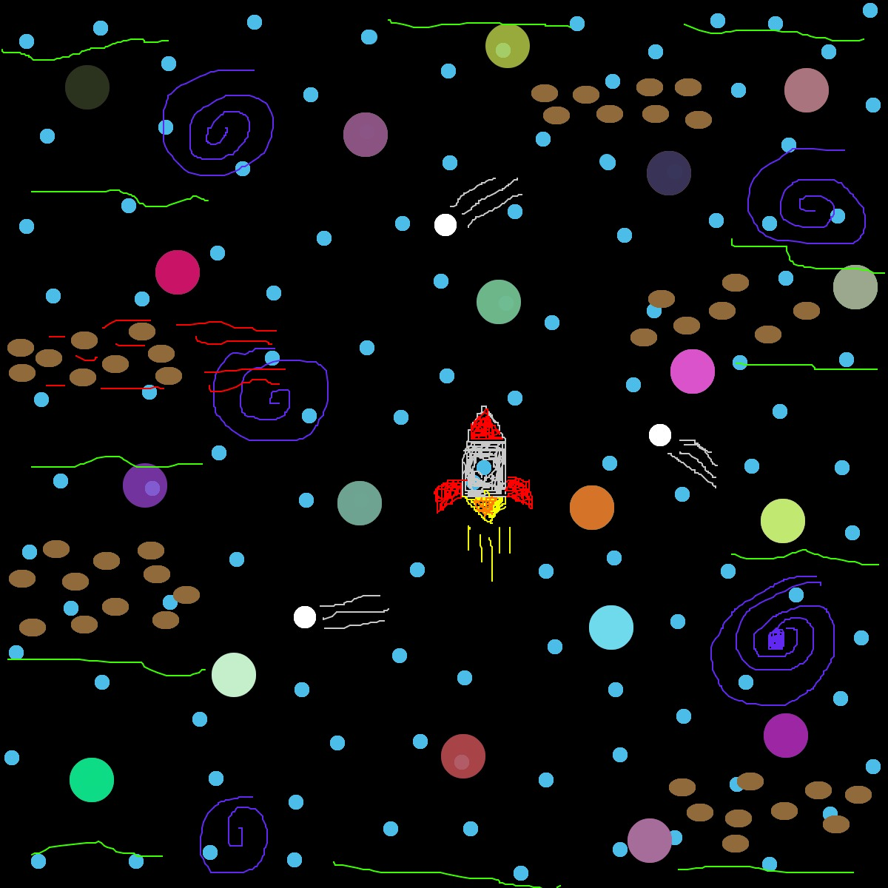

As part of my Code Art Project series, this is a DIY, or "do it yourself", of Photoshop. This project was done with the help of the coding software Processing. The idea with this project is to create artwork, using encoded tools with their own functions, as a person would in Photoshop. The image below is simply an example of the work that can be done using the
DIY Photoshop- Space Exploration

var img;
var initials ='ag'; // your initials
var choice = '1'; // starting choice, so it is not empty
var screenbg = 250; // off white background
var lastscreenshot=61; // last screenshot never taken
function preload() {
// preload() runs once, it may make you wait
// img = loadImage('cat.jpg'); // cat.jpg needs to be next to this .js file
// you can link to an image on your github account
}
function setup() {
createCanvas(600, 600); // canvas size
background(screenbg); // use our background screen color
}
function draw() {
if (keyIsPressed) {
choice = key; // set choice to the key that was pressed
clear_print(); // check to see if it is clear screen or save image
}
if (mouseIsPressed){
newkeyChoice(choice); // if the mouse is pressed call newkeyChoice
}
}
function newkeyChoice(toolChoice) { //toolchoice is the key that was pressed
// the key mapping if statements that you can change to do anything you want.
// just make sure each key option has the a stroke or fill and then what type of
// graphic function
if (toolChoice == '1' ) { // first tool
background(0);
} else if (toolChoice == '2') { // second tool
noStroke(20);
fill(75,189,232);
ellipse(mouseX, mouseY, 10, 10);
} else if (toolChoice == '3') { // third tool
noStroke(20);
fill(255);
ellipse(mouseX, mouseY, 15, 15);
} else if (toolChoice == '4') { // fourth tool
noStroke(0);
fill(144,106,58);
ellipse(mouseX, mouseY, 18, 12);
} else if (key == '5') { // fifth tool
stroke(255, 0, 0); //red
line(mouseX, mouseY, pmouseX, pmouseY);
} else if (toolChoice == '6') { // sixth tool
stroke(255, 126, 0); //orange
line(mouseX, mouseY, pmouseX, pmouseY);
} else if (toolChoice == '7') { // seventh tool
stroke(246, 255, 0); //yellow
line(mouseX, mouseY, pmouseX, pmouseY);
} else if (toolChoice == '8') { // eigth tool
stroke(60, 255, 0); //green
line(mouseX, mouseY, pmouseX, pmouseY);
} else if (toolChoice == '9') { // ninth tool
stroke(96,40,240); //purple
line(mouseX, mouseY, pmouseX, pmouseY);
} else if (toolChoice == '0') { // tool 0
stroke(200); //white
line(mouseX, mouseY, pmouseX, pmouseY);
} else if (toolChoice == 'g' || toolChoice == 'G') { // g places the image we pre-loaded
noStroke(20);
fill(random(255), random(255), random(255), random(255));
ellipse(mouseX, mouseY, 30, 30);
}
}
function testbox(r, g, b) {
// this is a test function that will show you how you can put your own functions into the sketch
x = mouseX;
y = mouseY;
fill(r, g, b);
rect(x-50, y-50, 100, 100);
}
function clear_print() {
// this will do one of two things, x clears the screen by resetting the background
// p calls the routine saveme, which saves a copy of the screen
if (key == 'x' || key == 'X') {
background(screenbg); // set the screen back to the background color
} else if (key == 'p' || key == 'P') {
saveme(); // call saveme which saves an image of the screen
}
}
function saveme(){
//this will save the name as the intials, date, time and a millis counting number.
// it will always be larger in value then the last one.
filename=initials+day() + hour() + minute() +second();
if (second()!=lastscreenshot) { // don't take a screenshot if you just took one
saveCanvas(filename, 'jpg');
}
lastscreenshot=second(); // set this to the current second so no more than one per second
}